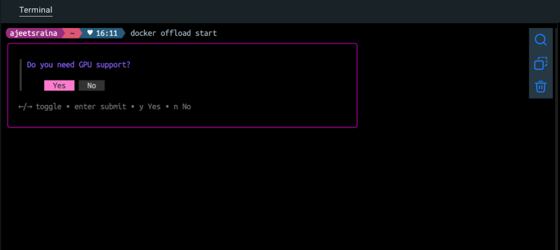
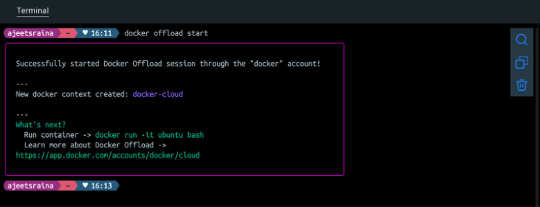
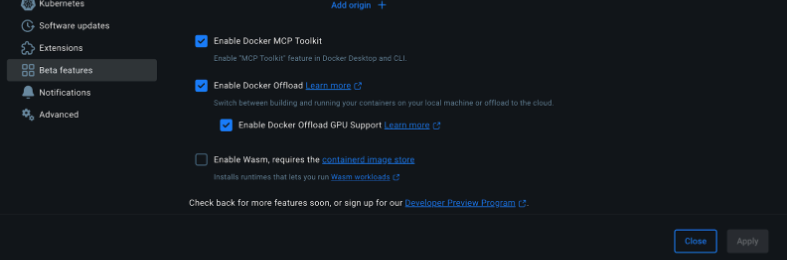
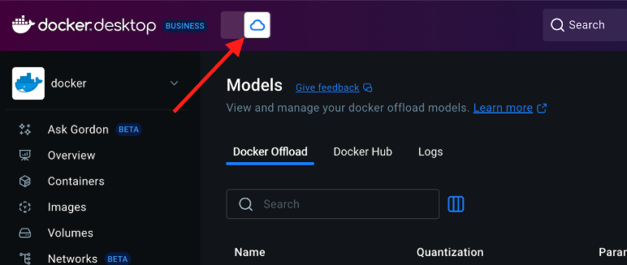
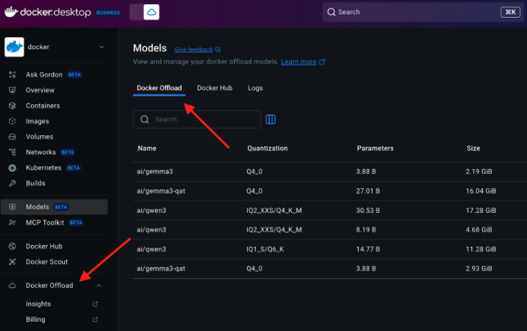

Getting Started
- Install Docker Desktop 4.43.0+
- Enable Docker Offload under Desktop > Settings
- Enable Docker Offload option
- Select Enable GPU Support
- Restart the Docker Desktop
- Open the terminal and run the following command:
docker offload
Usage: docker offload COMMAND
Docker Offload
Commands:
accounts Prints available accounts
diagnose Print diagnostic information
start Start a Docker Offload session
status Show the status of the Docker Offload connection
stop Stop a Docker Offload session
version Prints the version
Run 'docker offload COMMAND --help' for more information on a command.
Start a Docker Offload session
docker offload start
Please choose your Hub account and proceed further.
Enable or disable GPU support based on your preference.
!Tip: If you choose to enable GPU support, Docker Offload will run in an instance with an NVIDIA L4 GPU, which is useful for machine learning or compute-intensive workloads.

It starts Docker Offload session through the docker account.

Verify if a new docker-cloud context is created or not.
docker context ls
NAME DESCRIPTION DOCKER ENDPOINT ERROR
default Current DOCKER_HOST based configuration unix:///var/run/docker.sock
desktop-linux Docker Desktop unix:///Users/ajeetsraina/.docker/run/docker.sock
docker-cloud * docker cloud context created by version v0.4.2 unix:///Users/ajeetsraina/.docker/cloud/docker-cloud.sock
tcd Testcontainers Desktop tcp://127.0.0.1:49496
By now, you should be able to able to print available accounts through CLI.
docker offload accounts
{
"user": {
"id": "15ee357d-XXXX-4d39-87d9-dc3b697b3392",
"fullName": "XXX",
"gravatarUrl": "",
"username": "XXX",
"state": "READY"
},
"orgs": [
{
"id": "57b45934-74c0-11e4-XXX-0242ac11001b",
"fullName": "Docker, Inc.",
"gravatarUrl": "https://www.gravatar.com/avatar/XXXXXa68e?s=80&r=g&d=mm",
"orgname": "docker",
"state": "READY"
},
{
"id": "96a075XXXXXX1a78b",
"fullName": "",
"gravatarUrl": "",
"orgname": "XXXX",
"state": "READY"
}
]
}
Check the status of Docker Offload.
docker offload status
Result:
Account: docker
State: Started (Idle)
Session started: N/A
Time until idle: N/A
GPU: yes
Using Docker Offload using Docker Dashboard
- Navigate to Settings > Beta Features to enable Docker Offload.

- Once enabled, you will need to hit the toggle button to start Docker Offload.
- You can check the status by running the following command:
docker offload status
- You’ll notice that Docker Offload appears in multiple places Under Models On the left sidebar of the Docker Dashboard

- Verify if you’re using Cloud instance through Docker Offload.
docker info | grep -E "(Server Version|Operating System)"
Server Version: 28.0.2
Operating System: Ubuntu 22.04.5 LTS
ajeetsraina ~ ♥ 16:54
- You can verify the type of GPU that your remote instance is leveraging.
docker run --rm --gpus all nvidia/cuda:12.4.0-runtime-ubuntu22.04 nvidia-smi
Results:
==========
== CUDA ==
==========
CUDA Version 12.4.0
Container image Copyright (c) 2016-2023, NVIDIA CORPORATION & AFFILIATES. All rights reserved.
This container image and its contents are governed by the NVIDIA Deep Learning Container License.
By pulling and using the container, you accept the terms and conditions of this license:
https://developer.nvidia.com/ngc/nvidia-deep-learning-container-license
A copy of this license is made available in this container at /NGC-DL-CONTAINER-LICENSE for your convenience.
Fri Jul 4 11:26:11 2025
+---------------------------------------------------------------------------------------+
| NVIDIA-SMI 535.247.01 Driver Version: 535.247.01 CUDA Version: 12.4 |
|-----------------------------------------+----------------------+----------------------+
| GPU Name Persistence-M | Bus-Id Disp.A | Volatile Uncorr. ECC |
| Fan Temp Perf Pwr:Usage/Cap | Memory-Usage | GPU-Util Compute M. |
| | | MIG M. |
|=========================================+======================+======================|
| 0 NVIDIA L4 Off | 00000000:31:00.0 Off | 0 |
| N/A 44C P0 27W / 72W | 20200MiB / 23034MiB | 0% Default |
| | | N/A |
+-----------------------------------------+----------------------+----------------------+
+---------------------------------------------------------------------------------------+
| Processes: |
| GPU GI CI PID Type Process name GPU Memory |
| ID ID Usage |
|=======================================================================================|
+---------------------------------------------------------------------------------------+
It shows NVIDIA L4 GPU with 23GB of memory. You can find further details: - GPU: NVIDIA L4 (great for AI/ML workloads) - Memory: 23GB total, ~20GB already allocated - Driver: 535.247.01 with CUDA 12.4 support - Current Usage: 0% (idle)